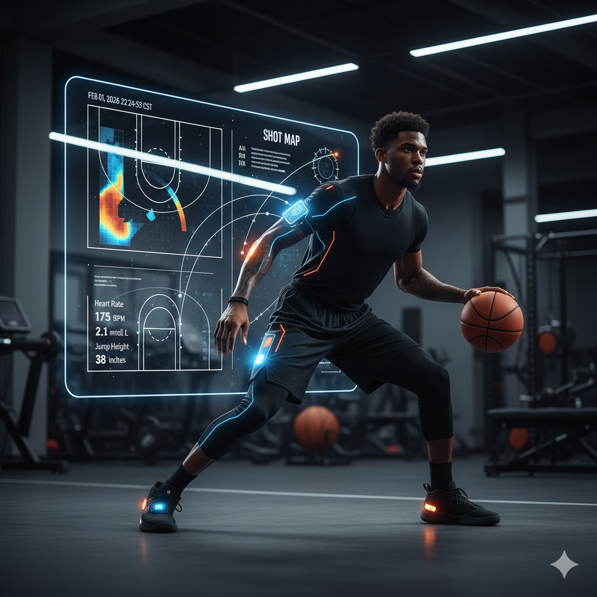

AI Wearables Are Becoming a Normal Part of Basketball Training
January 25, 2026

AI-powered wearables are becoming more common in basketball, especially at the college and professional levels. Devices like smart vests, GPS trackers, and heart rate monitors are now used during practices and games to collect real-time data on player movement, effort, and fatigue.
These tools use artificial intelligence to analyze the data and give coaches insights into how hard players are working and when they might need rest. Instead of guessing, teams can now make training decisions based on actual performance metrics, which helps reduce injuries and overtraining.
For basketball players, this technology can be helpful because it personalizes training. Players can see how their bodies respond to different workouts and adjust their routines to stay healthy and improve performance. As AI wearables become more affordable and accurate, they are likely to become a standard part of basketball programs at many levels.